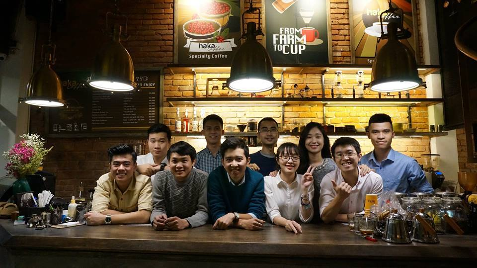

Để làm nên thành công của Haka Coffee ngày nay, không thể không nhắc đến gia đình Haka-nơi những người có cùng đam mê, có cùng tầm nhìn hội tụ lại với nhau để thỏa sức đam mê và phát triển 1 thương hiệu cà phê còn non trẻ. Anh chủ béo trước khi thành lập quán đã là giảng viên của các lớp đào tạo barista(nhưng người pha chế). Đó là nơi anh chủ béo gặp những nhân viên đầu tiên của quán.
Đội ngũ barista
Anh chủ béo thường kể lại rằng, trước khi thành lập quán, công việc giảng dạy đã giúp anh tìm ra thành viên đầu tiên của gia đình Haka đó là Kiên-người sau này trở thành barista chính của quán.
Sau 1 thời gian làm tại quán, anh Kiên đã thể hiện mình là 1 barista có kĩ năng, kinh nghiệm. Anh đã đặt giải nhất cuộc thi "Latte art" năm 2015 được tổ chức tại Hà Nội
Đội ngũ rang xay cà phê
Lại quay lại với anh chủ béo, trước khi thành lập quán anh cũng là 1 thợ rang xay cà phê, cũng đã có cho riêng mình 1 thương hiệu cà phê hạt, đó là cà phê Giang, anh cũng là 1 trong những người tiên phong ở miền Bắc nói riêng và cả nước nói chung đi đầu trong việc đem cà phê đặc sản(special coffee) đến gần hơn với những người yêu cà phê. Việc rang xay được anh đầu tư rất công phu, từ nhà máy đến thiết bị, tất cả đều đạt chuẩn. Nên không có gì ngạc nhiên khi đội ngũ rang xay cũng phải tương xứng.
Anh Quân, 1 trong những nhân viên tâm huyết với nghề và cũng là người có thời gian gắn bó lâu nhất với anh chủ béo. Anh đã là thợ rang chính từ những ngày đầu tiên khi thương hiệu cà phê Giang được thành lập, anh đã góp công lớn trong việc đưa thương hiệu cà phê đi xa tời mọi miền tổ quốc, với 7 năm kinh nghiệm trong ngành rang xay cà phê, tôi không giám chắc có ai đó làm công việc này với sự tâm huyết như anh.
Team leader và những thành viên khác
Chị Đại là cái tên chúng tôi thường dùng để chỉ team leader, một quán lý mẫu mức góp phần không nhỏ vào sự thành công của quán. Chị là người đã gắn kết gia đình Haka, hết lòng giúp đỡ nhân viên trong quá trình làm việc. Là một người thân thiên và dễ gần không ngạc nhiên khi chị được tất cả nhân viên trong quán quý mếm và tôn trọng. Còn rất nhiều nhân viên quán khác, có người đến, người đi những tất cả đều là 1 gia đình, nhiều người sau khi rời quán đã ghé lại quán chơi, chia sẻ với các nhân viên cũ những câu chuyện xưa cũ, để rồi mỗi lần tổ chức "nhậu" tất cả lại quây quần. 